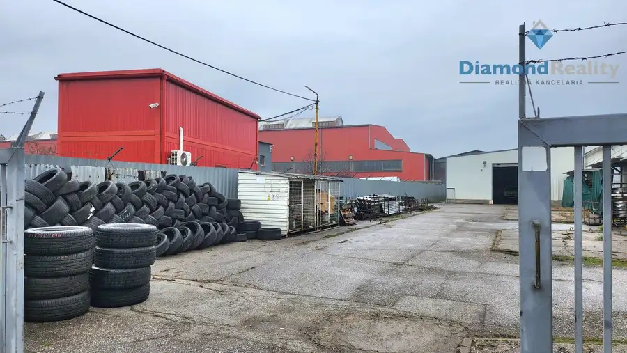
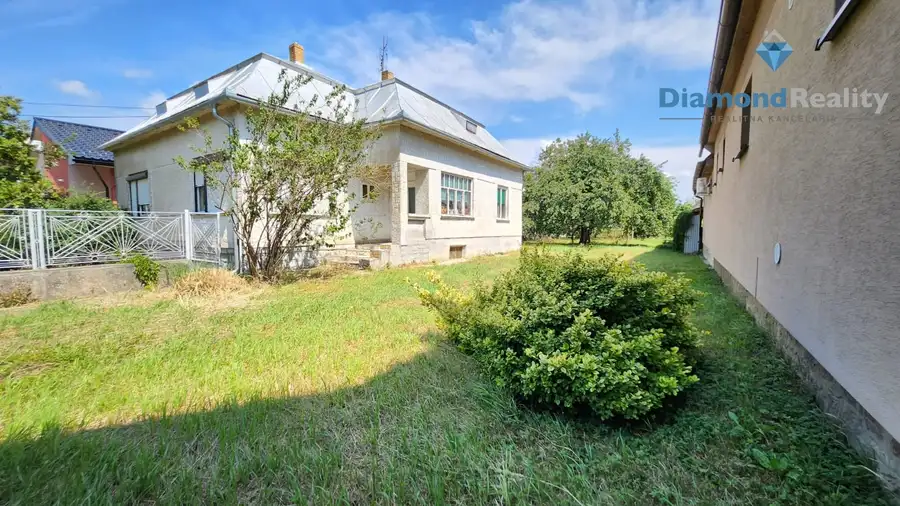
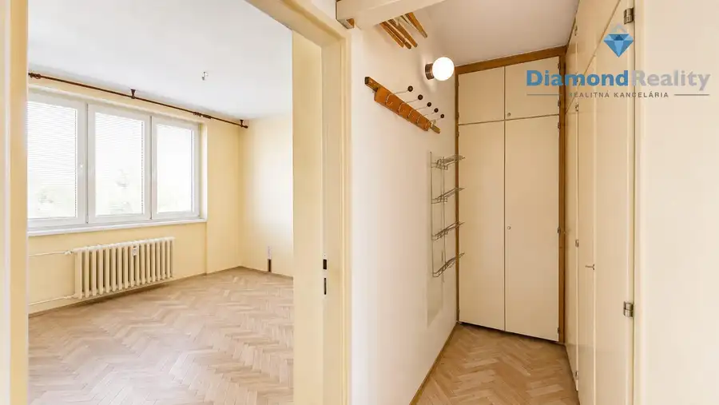
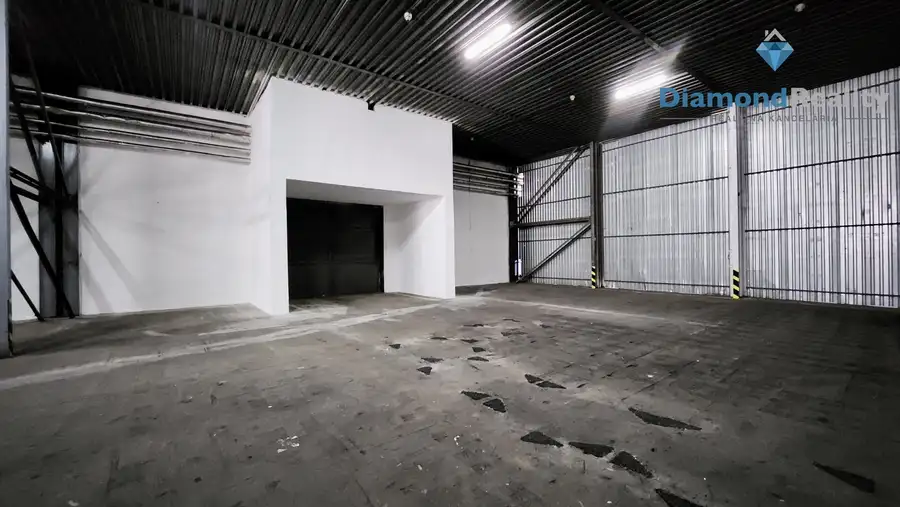
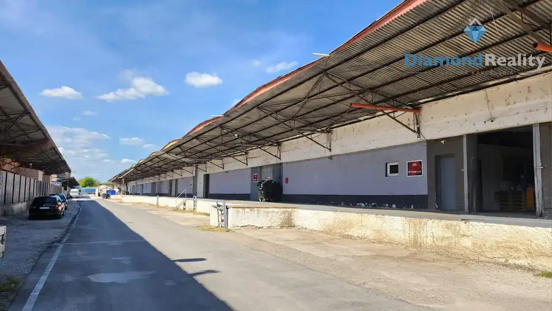
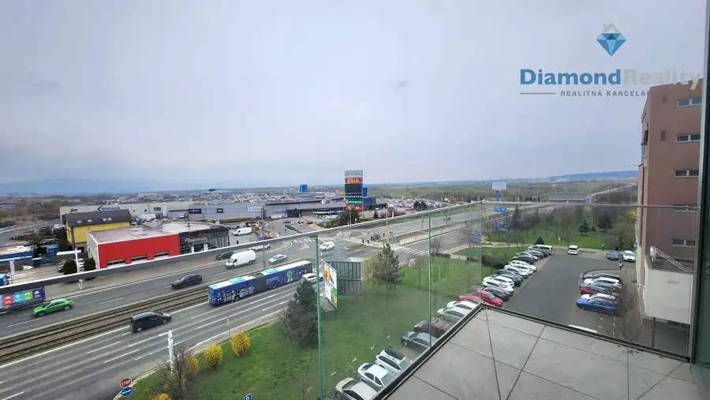
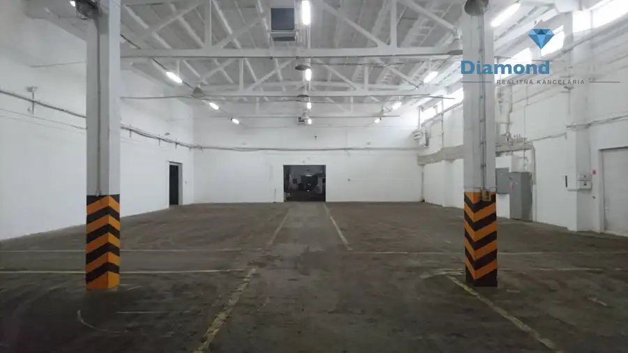

Aktuálna ponuka
Nehnuteľnosti, ktoré ponúkam
12 nehnuteľností na predaj a prenájom. Vyberte typ, alebo napíšte lokalitu.
12 z 12 ponúk
 BytNové10
69 990 €Investičná garsónka priamo v centre SNV- koceľova ul.
Spišská Nová Ves
26 m²1. podlažie
INVESTIČNÁ GARSÓNKA V SRDCI SPIŠSKEJ NOVEJ VSI | KOCEĽOVA | 26 m²Diamond Reality Benöczová s.r.o. vám exkluzívne ponúka na predaj garsónku o výmere…
BytNové10
69 990 €Investičná garsónka priamo v centre SNV- koceľova ul.
Spišská Nová Ves
26 m²1. podlažie
INVESTIČNÁ GARSÓNKA V SRDCI SPIŠSKEJ NOVEJ VSI | KOCEĽOVA | 26 m²Diamond Reality Benöczová s.r.o. vám exkluzívne ponúka na predaj garsónku o výmere…
 Dom10
33 330 €🌿 Bývanie v rozprávke – Domček Rudabánya
Rudabánya
92 m²
HĽADÁ SA NOVÝ MAJITEĽ DOMČEKA V SRDCI PRÍRODY 🌿 RudabányaDiamond Reality Benóczová s.r.o. vám exkluzívne ponúka na predaj čiastočne zrekonštruovaný…
Dom10
33 330 €🌿 Bývanie v rozprávke – Domček Rudabánya
Rudabánya
92 m²
HĽADÁ SA NOVÝ MAJITEĽ DOMČEKA V SRDCI PRÍRODY 🌿 RudabányaDiamond Reality Benóczová s.r.o. vám exkluzívne ponúka na predaj čiastočne zrekonštruovaný…
 Dom10
23 500 €GÖNC - Maďarsko - Rodinný dom s 10 árovým pozemkom
Gönc
120 m²
Diamond Reality Benöczová s.r.o. vám exkluzívne ponúka na predaj rodinný dom s 10-árovým pozemkom v maďarskom meste Gönc. Nehnuteľnosť je vhodná pre…
Dom10
23 500 €GÖNC - Maďarsko - Rodinný dom s 10 árovým pozemkom
Gönc
120 m²
Diamond Reality Benöczová s.r.o. vám exkluzívne ponúka na predaj rodinný dom s 10-árovým pozemkom v maďarskom meste Gönc. Nehnuteľnosť je vhodná pre…
 PozemokNové10
Cena dohodouVeľkorysý rekreačný pozemok pod Obišovským hradom
Obišovce
10240 m²
Diamond Reality Benöczová s.r.o. vám exkluzívne ponúka na predaj nádherný pozemok uprostred prírody o výmere 10 240 m², nachádzajúci sa v obci…
PozemokNové10
Cena dohodouVeľkorysý rekreačný pozemok pod Obišovským hradom
Obišovce
10240 m²
Diamond Reality Benöczová s.r.o. vám exkluzívne ponúka na predaj nádherný pozemok uprostred prírody o výmere 10 240 m², nachádzajúci sa v obci…

Komerčné priestory6 Cena dohodouPRENÁJOM - JUŽNÁ TRIEDA - Sklad so strategickou polohou - 353 m2 Juh, Košice 353 m² Diamond Reality Benöczová s.r.o. Vám ponúka na prenájom sklad s FANTASTICKOU polohou.Výmera, vynikajúci prístup a skvelá lokalita zabezpečia Vám aj…
Dom10 Cena dohodouMichalovce, Močarianska - Skvelá príležitosť na bývanie aj podnikanie 7696m2 Michalovce 201 m² Diamond Reality Benöczová s.r.o. vám exkluzívne ponúka na predaj rodinný dom s výnimočne veľkým pozemkom v obci Močarany pri Michalovciach.Táto…
Byt10 Cena dohodou3-izbový byt v TOP lokalite – Mudroňova | 72 m² | skvelá dispozícia Juh, Košice 3-izbový72 m² 3-IZBOVÝ BYT V TOP LOKALITE – MUDROŇOVA | 72 m² | SKVELÁ DISPOZÍCIADiamond Reality Benöczová s.r.o. vám exkluzívne ponúka na predaj 3-izbový byt na… Komerčné priestory10
Cena dohodou3800 m2 - PRENÁJOM skladov
Nad jazerom, Košice
3842 m²
Diamond reality v spolupráci s Kristínou Benöczovou Vám ponúkajú na prenájom nebytové a skladové priestory na sídlisku nad Jazerom priamo v špičke…
Komerčné priestory10
Cena dohodou3800 m2 - PRENÁJOM skladov
Nad jazerom, Košice
3842 m²
Diamond reality v spolupráci s Kristínou Benöczovou Vám ponúkajú na prenájom nebytové a skladové priestory na sídlisku nad Jazerom priamo v špičke…

Komerčné priestory10 Cena dohodouPrenájom - Murovaný sklad s kanceláriami 850 m2 - strategická poloha Nad jazerom, Košice 849.03 m² Diamond reality Benöczová s.r.o. vám ponúka na prenájom nebytové priestory Nad Jazerom, Košice. Areál má výhodnú polohu cca 1 km od centra mesta a…
Komerčné priestory8 Cena dohodouIDEÁLNY Sklad s kanceláriou a nakladacou rampou 631 m2 - E 23 Nad jazerom, Košice 630 m² Diamond reality v spolupráci s Ing. Kristínou Benöczovou Vám ponúkajú na prenájom sklad vo vyhľadávanej lokalite Košice NAD JAZEROM. Výborná…
Komerčné priestory10 Cena dohodouŠpičkové obchodno - kancelárske priestory na mieru - OPROTI OPTIME Západ, Košice 490 m² Ing. Kristína Benöczová v spolupráci s Diamond Reality vám ponúka kancelárske, administratívne a obchodné priestory na prenájom OPROTI OPTIME. Nová…
Komerčné priestoryNové10 Cena dohodouVýrobné haly a sklady – prenájom skladových a výrobných priestorov s kanceláriami | 3 251 m² | TOP dostupnosť pre kamióny Nad jazerom, Košice 3251 m² VÝROBNÉ HALY A SKLADY – PRENÁJOM SKLADOVÝCH A VÝROBNÝCH PRIESTOROV S KANCELÁRIAMI | 3 251 m² | TOP DOSTUPNOSŤ PRE KAMIÓNYDiamond Reality Benoczova…Tomuto výberu zatiaľ nezodpovedá žiadna ponuka. Napíšte mi, čo hľadáte.